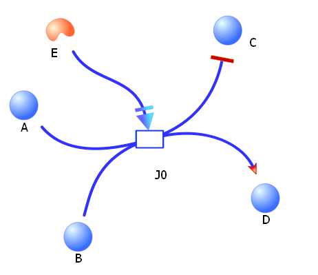
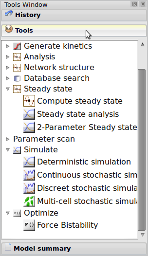
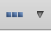
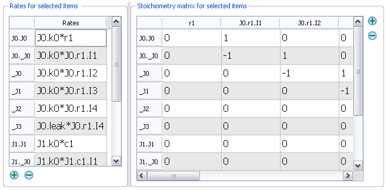
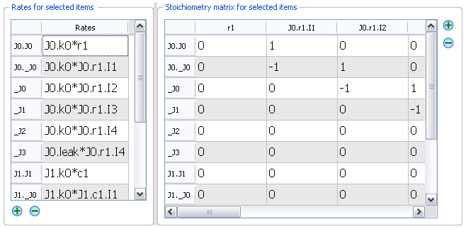

The catalog of biological components (shown above) are the fundamental objects that are used to construct models in TinkerCell. Each component has a unique set of attributes and a designated visual representation. The attributes characterize that part. For example, the attributes for a "Coding" part are its DNA sequence (a text string) and the length of the sequence (a number). The default visual representation of each part can be changed by the user.
The catalog is organized as a tree, although not displayed that way. The tree of components is organized into
three major divisions: Nodes, Compartments, and Modules. The "empty" object is a special object that belongs in all categories. The "Nodes" division represents molecules such as proteins, RNA, and metabolites or fragments of DNA such as genes and promoters. The "Compartments" division represents things with volume that can contain other things. Compartments can include sub-cellular regions such as nucleus or mitochondrion. They may also represent general regions that the model wishes to separate. Cells are a specific kind of compartment. The third division, "Modules", represent sub-models that can be connected together to form bigger models. This is described more in a later section.
The philosophy of TinkerCell is to make models well characterized. Instead of defining all components of a model as generic "variables" and "reactions", TinkerCell models also contains information about the type of item, such as "Promoter", "Protein", "mRNA", and so on. The list of components and their hierarchy are stored in an XML file called NodesTree.xml. Editing this file will alter the tree of components. This file will eventually be loaded from a database of known biological parts. Users may click the right mouse button on components in the catalog to learn more about each item.
Units are not defined in a model but in the tree of parts and connections. TinkerCell models are meant to be compatible with one another, and that is why units are kept away from the models themselves and instead shifted to the tree of parts and connections. It is assumed that the units provided in the XML file that defines the tree of parts and connections will be "standard" units.

The catalog of connections (shown above) is the set of different types of connections that can be used to connect molecules and parts. Each type of connections can only be made between specific types of nodes. For example, a reaction where one small molecule such as glucose is converted to another small molecule is classified as a "biochemical" reaction in TinkerCell. Sub-classes of "biochemical" reactions include the "1 to 1", "2 to 1", "2 to 2", and similar connections listed in the catalog. When a transcription factor regulates a promoter, it is classified under "transcription regulation", which can then be further classified as activation or repression. A transcription regulation cannot be used to connect two molecules together (TinkerCell will display an error). Some of these connections only allow two parts to be connected, while some allow different number of parts to be connected. The type and number of parts allowed for each connection can be viewed by clicking the right mouse button on one of the connections in the connections catalog.
Once again, the philosophy in TinkerCell is to make models well characterized. If all the reactions were simply called "reactions", it would be very difficult for TinkerCell to interact with databases or perform other tasks which requires knowledge about the type of connections.
Connections can be decorated in many ways: the arrow heads can be changed using the "replace graphics" option in the toolbar; the "middle region" can be made visible and replaced using the "replace graphics" option again. The lines can be dashed, dotted, or solid. Modifier connections (bottom-most option in the connections tree) are used to connect a part to a connection. Below is an illustration.

How to insert components:
Components are inserted by clicking on one of the buttons in the components catalog and then clicking on the screen. You can insert more of the same component by clicking again. Press Escape or the Spacebar to exit the insertion mode.
Extra details: what happens a component is inserted:
Various "plug-ins" in TinkerCell monitor the user's activity. When a component is inserted, the plug-ins carry out various operations. For example, one of the plug-ins called the "Numerical Attributes" retrieves information from the catalog of components and connections in order to define default attributes of each component. These See the parameters section for more detail.
How to insert connections:
Connections are inserted by first clicking on one of the connections in the connections tree and then selecting the parts to connect, one by one. The connections tree imposes some restrictions about what type of parts can be connected with the different types of connections, and those rules are enforced. For example, a user may not connect a promoter and a gene using a "biochemical" reaction, because the definition of a "biochemical" reaction in the connections tree states that it much between two or more "species" parts.
Extra details: what happens a connection is inserted
Various "plug-ins" in TinkerCell monitor the user's activity. When a connection is inserted, the plug-ins carry out various operations. One of the important plug-ins pertaining to connections is the "Stoichiometry and Rates" plug-in, which ensures that any new reaction has a default rate equation. Genetic networks are somewhat more complicated because TinkerCell offers different ways of modeling genetic networks. There is a special plug-in called "Auto Gene Regulatory Tool" that automatically generates rate equations for transcription and translation based on the nearby promoters and ribosomal binding sites. See the section on genetic networks for more details.

TinkerCell provides numerous simulation and analysis functions. All of these functions are listed in the "Tools" menu. Each function is listed inside a category. For example, the "Simulate" category contains deterministic simulation and stochastic simulation. The "Steady state" category contains 1D and 2D steady state analysis, which can be used to study the input-output response of a system.
There are several ways to examine and edit a model. The first method is to use the "tools" that are displayed when the user selects items on the screen (as shown in the diagram below). Pointing the on top of each tool will show a tool tip describing the tool.

Each tool will allow the user to view and edit specific features of the model. For example, the "Reaction rates" tool allows users to view and edit the reaction rates and stoichiometry for selected reactions. The "Model summary" tool, shown to the right, uses several other tools to display a summary of the model.
Alternatively, the user may double-click or press enter on selected items to see the model summary window.
Parameters, also called "Numerical Attributes" in TinkerCell, are constant values that may or may not be used in the model. The important fact is that parameters are local, meaning that they belong with an item. For example, reaction J0 might have parameter k0 and reaction J1 might also have a parameter called k0. The full name of each parameter is J0.k0 and J1.k0, respectively. The window shown to the right is the attributes window corresponding to the diagram above. When entering an equation, the full parameter name should be used. If the user enters "k0" by accident, TinkerCell will select one of the two: J0.k0 or J1.k0.
 parameter with that name. The new parameter will belong with the item under consideration.
parameter with that name. The new parameter will belong with the item under consideration.
Compartments represent a space (volume) inside of which certain items are localized. In the screenshot below, two compartments, c1 and c2 belong inside a larger compartment, the cell. While the names appear to be redundant, the "complete" name is unique, because the complete name has the parent item's name as a prefix, which is explained in the next section. The parent of an item is the compartment containing that item.
Modules are models that can be connected to construct a larger model.
How to construct a module:
step 1: make a network
step 2: place a module from the parts tree on the screen
step 3: adjust the size of the module so that the network can be placed inside
step 4: drag the entire network into the module.

Once the network has been places inside the module, the "interface" items can be constructed.
Constructing interfaces:
step 1: select one or more items inside the module
step 2: click on the module input/output tool on the side (or "Set input/output" using right-click)
A small link should appear for each item that has been selected. These links can be used to connect modules, as shown below.
The diagram above indicates that the proteins that have been "linked", i.e. P1 in Module1 and P1 in Cycle, are the same. The two modules have been merged by declaring which items are shared between the two modules. Deleting the connection between the modules will make the items distinct once again.
Modules are highly flexible in what they represent. Synthetic biology, at its current state, uses the concept of composites, which are biological parts made of other parts. These can be represented using modules in TinkerCell. Modules will eventually consist of multiple categories.
There are three ways of constructing gene regulatory networks in TinkerCell. The first is using a single rate expression to describe the production of a protein or mRNA. The equation will be based on the concentrations of the transcription factors controlling the gene. The second way is similar, but it uses DNA parts that can be connected together. The third way is the most elaborate way: it allows the genetic network network to be represented as a multi-stage process, which can be useful to explicitly model delays in the network.
The first and second methods are made possible through the "Automatic gene regulatory network" plug-in, which detects when transcription networks are constructed and automatically generated Hill equations for the networks. Any automatically derived rate equation is always displayed in the output window (the command-line window), so it is good practice to observe messages in the output window.
The simplest way to built a genetic network is as follows:
step 1: insert an expression cassette from the "parts" catalog
step 2: right-click (or use ctrl on Mac) on the expression cassette
step 3: insert a transcription factor from the "molecules" catalog
step 4: use the "transcription activation" or "transcription repression" connection to connect the transcription factor to the expression cassette
step 5: use the same process to make the product of one gene regulate another gene
TinkerCell will assign default gene regulation equations based on the transcription factors regulating a gene product. The user can double-click on the reactions to view and edit these reactions.
Examine the rate laws in the plot window:
The Plot Window can be used to examine the shape of the rate expression. A user may copy and paste the rate equation (or type any other equation) into the text box at the bottom of the Plot Window. After specifying the x-axis and the other graph parameters, a user can visually inspect an equation. This feature allows a user to plot an equation from the model without moving to another application and redefining all the parameters in the other application. Multiple equations can be specified by using a new-line or semi-colon to separate equations.

The part-based method is designed with the synthetic biology community in mind. In synthetic biology, it is a common theme to "assemble" parts, much like assembling toy building blocks. The idea here is the same. The following steps can be used to generate a network similar to the one above.
step 1: insert a Coding part from the parts catalog
step 2: insert an RBS part (optional for this example)
step 3: insert a Promoter part
step 4: insert a Terminator part (optional for this example)
step 5 (a): drag each part next to each other as shown in the screenshot below.
step 5 (b): OR use the "align compact horizontally" option from the align menu at the top: 

Again, the rate expression are all automatically generated as the parts are connected. The RBS strength is used is the translation step.
The automatically generated rate equations are based on equilibrium assumptions. TinkerCell allows a user to model genetic networks more explicitly by specifying each intermediate reaction step. This is an uncommon way of modeling genetic network because it is cumbersome and the information it provides must be carefully analyzed to make conclusions. Nonetheless, TinkerCell provides an automatic method for inserting intermediate steps in any reaction.
 

The connections between r1 and c1 (and c1 and c2) represent a flow of RNA polymerase, including the elongation process. Hence. those reactions truly represent a multi-step process, because each stage in the elongation process involves a catalytic reaction. There is a button available, called "Add N intermediate steps", located under the "Generate kinetics" category of functions. This function, written in C, automatically converts a single-step process to a multi-step process by adding N intermediate steps that obey mass-action kinetics. The automatically generate set of reactions are shown above to the right. What is shown are the reaction rates and stoichiometry table.
This explicit method may be confusing for those who may be new to the field. It is intended for more complicated modeling.

Binding reactions are a good example of a special feature in TinkerCell, which is representing multiple related reactions with a single visual connection
and hiding intermediate molecular species. A "Binding" reaction represents two events: association and dissociation. There is an intermediate that is formed in this process, but it is not displayed when a user inserts a binding reaction.
By examining the stoichiometry table, one can see the full kinetics that is represented by this single reaction. The stoichiometry table, shown below, shows that there are two reactions (rows) and three molecular species (columns) represented by the connection named J0. The reaction rates are shown next to the table. Each value in the table shows how many molecules are consumed or produced during each reaction. For example, in the first row -1 -1 1 means that one p1 and rna1 are consumed and one J0.complex is made. The intermediate species J0.complex is local to the reaction J0.
Common procedures for examining a model is as follows:
1. Viewing the summary window, which can be opened using double-click or enter. This window will show parameters, functions, and other such obvious information related to the selected item(s). All the items can be selected to see the summary for the whole model.
2. Using the attributed window on the side to examine all the parameter values.
3. Using the "user defined functions" area to examine rate equations or other functions. Users may copy and paste any equation to this space as well as write their own functions and compare them. The equations will use parameter values defined in the model, thus allowing a user to change parameters and see how the graphs are affected.
There is an "Inputs" tab located next to the components and connections catalog. There are a list of forcing functions, such as sine wave, that are available here. There is also an icon for inserting events. Events are responses that are triggered under a specific condition. Insert an event on the screen and double-click in order to add or remove events.
Forcing functions can also be provided by selecting the "Functions" tool that is displayed when items are selected. This tool will list a set of functions defined inside the selected items. For example, if a user wants to assign a function to the molecule "s1", then the user should select this molecule, select the "Function" tool on the right, and then enter "s1 = s2 * (1 + sin(time))" or some other function of interest.
TinkerCell supports graphical and text-based modeling. The text-based modeling is done via a third-party text parser (a plug-in). The text parser that is included with TinkerCell is called Antimony (antimony.sourceforge.net). Antimony is a modular model construction language. An example script is shown below.
Model M
E + S -> ES; kf * E*S
ES -> E + S; kb * E*S
ES -> EP; k1 * ES
EP -> ES; k2 * EP
EP -> E + P; kcat * EP
kf = 1 + 0.6 *sin(time)
kb = 1.2
k1 = 0.1
k2 = 0.9
kcat = 0.3
end
TinkerCell designated a folder as the user's home folder for temporary TinkerCell files. When TinkerCell loads plug-ins, it will also search this folder. So users without write-access to the main installation folder may use their TinkerCell home folder to place new plug-ins or Python scripts. By default, this folder is <user-home>/TinkerCell, where <user-home> is the home directory of the current user (in Windows XP, this is inside "C:\Documents and Settings" and in Vista, this is inside "C:\Users\". In Unix systems, a terminal usually starts at the user's home directory).
The command-line input and output window is a space where various messages are printed, such as automatically generated rate equations or errors. In addition, it is an interacting Python window. The Python interface is provided by a plug-in. Various Python functions are available for getting data from the model or editing the model. The data from the plot window can also be obtained, and tabled can be presented in the plot window. Here are some example commands:
> x = find("s1")
> print parameters(x)
> setParameter(x,"p",3.14)
> print getParameter(x,"p")
> setTextAttribute(x,"sequence", "ACGTACGTACGT")
> print getTextAttribute(x,"sequence")
> j = find ("J1")
> print stoichiometry(j)
> print stoichiometry( allItems() )
> print rates( selectedItems() )
> setRate(j, "1 + sin(time)" )
> print getNumericalDataMatrix(0, "Flux constraints")
The last command is a very generic command that can be used to get any information stored in the model. There are several such commands that allow full control via the command-line. Of course, such functions are oriented toward a programmer and therefore favor control over easy of use.
All functions in the PySCeS module can be used inside TinkerCell's command prompt. PySCeS model is loaded by invoking mod = tc2pysces.load() (tc2pysces stands for TinkerCell-to-PySCeS). The returned variable mod will be a PySCeS model. Please see the PySCeS documentation for all the functions available: http://pysces.sourceforge.net/documentation.html
TinkerCell integrates visual interface with programming. C and Python programs provide all of the functionalities that are available in the Functions window. There are two files located in the TinkerCell directory: "clibraries.txt" and "pythonscripts.txt". These two files list all the C and Python programs that are loaded into TinkerCell as it starts. Programs listed in these files will appear as buttons, menu items, and more. The files themselves contain the necessary documentation about the format.

The TinkerCell C API allows C programs to select, insert, delete, or move items. It also allows C programs to access and change parameters, rate equations, or other information. C programs automatically run on separate threads, thus taking advantage of multiple processors.
The best way to see the complete C API is to open the "Coding window" (shown to the right). Users may write C programs and run them inside TinkerCell. A list of available functions is listed in the coding window. Since the list is automatically generated from the C header files, it will always be up-to-date.
The Python API is build on the C API. All functions that are available through the C API are also made available for Python. The function calls are often made simpler due to default parameter values.
Again, the best way to see the available functions is to open the coding window in TinkerCell and look at the list of functions listed in the Python tab.
R was originally planned to be supported in the same manner as Python. But due to Rpy, which can run R within Python, this seems to be unnecessary.